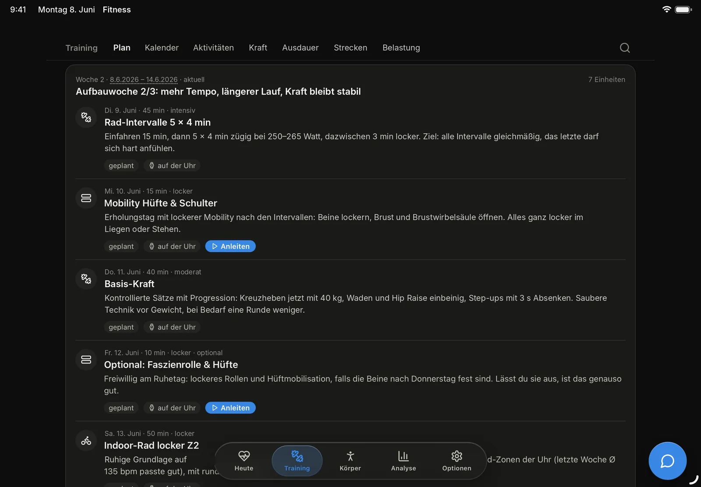
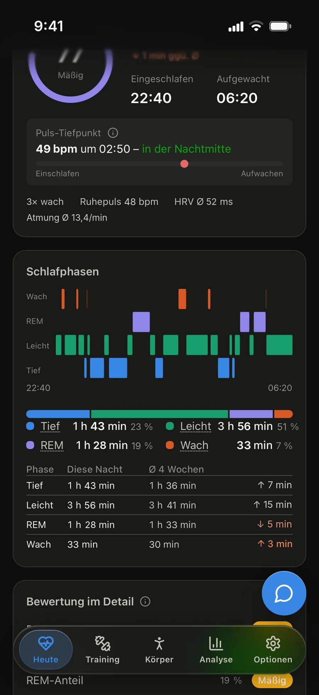
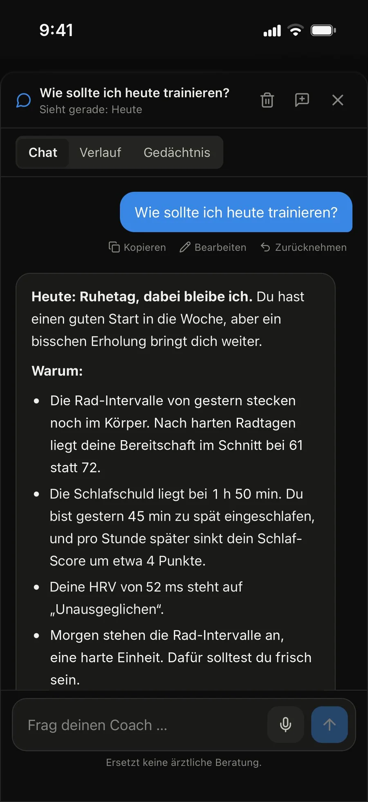
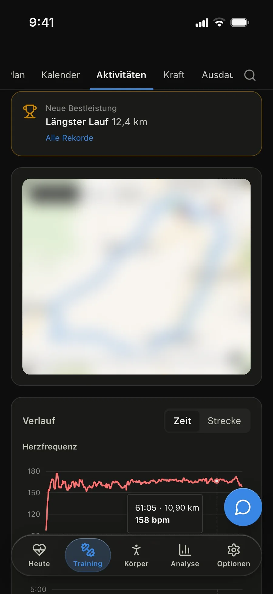
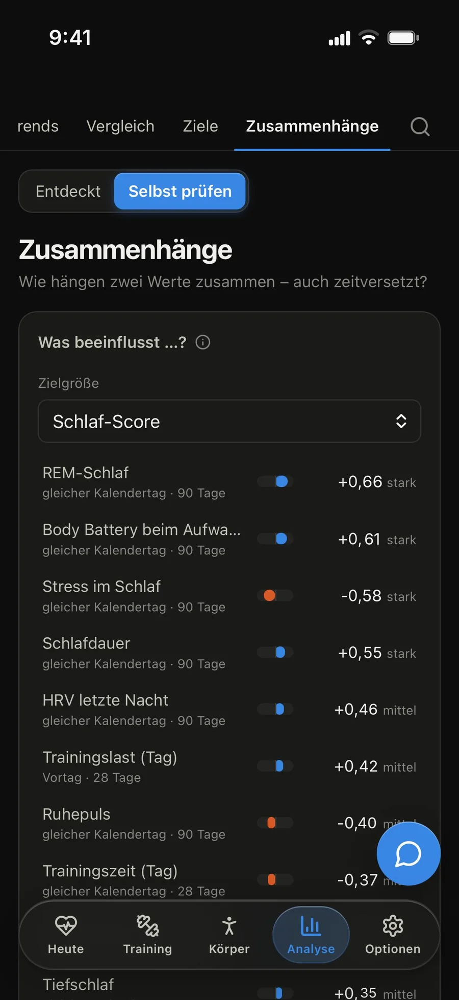

Coach, Trainingsplan, Strecken und Auswertungen an einem Ort.
VitalDeck holt die Daten deiner Garmin-Uhr auf deinen eigenen Server und macht mehr daraus als Statistiken. Ein KI-Coach ordnet Schlaf und Erholung ein, plant dein Training Woche für Woche und schickt Einheiten direkt auf die Uhr. Dazu Streckenplanung und Auswertungen bis ins Detail, als fertige Anwendung im Browser, auf Handy, Tablet und Rechner.
- Open Source
- Docker auf Pi, NAS oder Server
- Kern kostenlos
- Kein Konto bei mir


Warum es VitalDeck gibt
Sport gehört für mich zu jedem Tag. Mich reizt, Woche für Woche ein Stück besser zu werden, und ich will verstehen, was dabei passiert: Warum fühlt sich eine Einheit leicht an und die nächste schwer? Was macht eine kurze Nacht mit dem Training am nächsten Tag? Aus dieser Neugier ist VitalDeck entstanden. Seit drei Monaten begleitet es mich jeden Tag, und jetzt mache ich es so fertig, dass du es genauso nutzen kannst.
Lennard, Entwickler von VitalDeck
Was VitalDeck anders macht
Es gibt gute Werkzeuge für Garmin-Daten. Keins davon verbindet eine fertige Anwendung, einen Coach, der wirklich plant, und Daten auf deinem eigenen Server.
| VitalDeck | Garmin-App | Grafana-Setups zum Selbsthosten | KI-Coach als Cloud-Dienst | |
|---|---|---|---|---|
| Fertig gestaltete Oberfläche fürs Handy | Jaals Anwendung im Browser, auch offline | Ja | NeinDashboards baust du selbst | Ja |
| Ordnet Werte ein und zeigt Zusammenhänge | Jazwei beliebige Werte, auch zeitversetzt | Teilweiseeinzelne Werte | Neinnur Rohdaten | Ja |
| Coach plant und schickt Einheiten auf die Uhr | Jadu bestätigst jede Änderung | TeilweiseGarmin Coach, aber ohne Rückfragen und Begründung | Nein | Meist nur Antworten |
| Strecken planen mit Untergrund, Höhe und Wetter | Ja | Teilweise | Nein | Nein |
| Daten auf deinem eigenen Server | Ja | Nein | Ja | Nein |
| Ohne Abo | JaPro als Einmalkauf | TeilweiseConnect+ ist ein Abo | Ja | Nein |
Stand November 2026, nach meiner eigenen Recherche. Wenn etwas nicht stimmt, schreib es mir.
So sieht es aus
Echte Screenshots aus der Anwendung, gefüllt mit Beispieldaten. Die Karte ist unkenntlich gemacht.




So arbeitet der Coach
Er antwortet nicht nur, er plant mit. Entschieden wird trotzdem immer von dir.
Kennt deine Werte
Schlaf, HRV, Belastung, deinen Kalender und das, was du ihm über dich erzählst.
Schlägt vor und begründet
Zum Beispiel einen Ruhetag statt Intervallen, mit den Zahlen, die dafür sprechen.
Du entscheidest
Geändert wird nichts, bevor du tippst. Du kannst auch nachfragen oder ablehnen.
Auf die Uhr
Die Einheit oder Strecke landet direkt auf deiner Garmin-Uhr.
Der Coach ist Teil von Pro und nutzt Claude von Anthropic mit deinem eigenen API-Schlüssel. Er ersetzt keinen ärztlichen Rat.
Was drin ist
- Heute
- Morgen- und Abend-Briefing, Bereitschaft, frei anordenbare Widgets
- Schlaf und Erholung
- Hypnogramm, HRV, Ruhepuls, Body Battery, Schlafschuld, Zubettgeh-Empfehlung
- Training
- Aktivitäten mit Karte und Verläufen, Belastung, Fitness und Form, Kalender, Rekorde, Kraft-Auswertung
- Strecken planen
- Runden oder von A nach B für Laufen, Trailrunning, Wandern, Rennrad, Gravel und Mountainbike. Länge, Untergrund und Höhenmeter frei wählbar, Wind und Regen fließen mit ein. Dazu Höhenprofil, Import per GPX oder Komoot-Link und direkt als Strecke auf die Garmin-Uhr
- Analyse
- Trends, Vergleiche, Ziele mit Prognose, Zusammenhänge zwischen beliebigen Werten
- Überall
- Läuft im Browser, auf dem Handy zum Startbildschirm hinzufügbar, Hell und Dunkel, Push-Mitteilungen, funktioniert auch offline
Was du brauchst
- Eine Garmin-Uhr und ein Konto bei Garmin Connect
- Ein Gerät, das dauerhaft läuft und Docker kann, zum Beispiel ein Raspberry Pi, ein NAS, ein Heimserver oder ein PC
- Für Pro einen eigenen API-Schlüssel von Anthropic
Wo deine Daten liegen
In einer Datenbank auf deinem eigenen Gerät. Es gibt kein Konto bei mir und keinen Server von mir dazwischen.
Nach außen geht der Abgleich mit Garmin Connect. Mit Pro gehen außerdem die Werte, die der Coach für eine Antwort braucht, mit deinem Schlüssel an Anthropic.
Kostenlos und Pro
Die Aufteilung ist vorläufig. Deine Antwort auf der Warteliste hilft, sie festzulegen.
VitalDeck
- Garmin-Abgleich und eigene Datenbank
- Dashboard, alle Auswertungen, Kalender, Karten, Streckenplanung
- Frühwarnung, Ziele, Zubettgeh-Empfehlung
- Im Browser und auf dem Handy, Push, offline
VitalDeck Pro
- Alles aus der kostenlosen Version
- KI-Coach im Chat mit Gedächtnis
- Briefings und Einschätzungen per KI
- Trainingspläne, die sich jede Woche anpassen
- Einheiten und Alternativen direkt auf die Uhr
Pro nutzt deinen eigenen Claude-API-Schlüssel. Die Kosten dafür zahlst du direkt beim Anbieter, typischerweise wenige Euro im Monat.
Garmin-Anbindung
VitalDeck nutzt heute eine inoffizielle Schnittstelle zu Garmin Connect, wie die meisten Open-Source-Projekte in diesem Bereich. Sie läuft seit Jahren zuverlässig, kann aber kurzzeitig ausfallen, wenn Garmin etwas ändert. Deshalb ist geplant:
- eine Bewerbung für das offizielle Garmin Connect Developer Program, um Workouts und Strecken über die offizielle Schnittstelle auf die Uhr zu bringen
- ein Import von FIT- und GPX-Dateien, der ganz ohne Schnittstelle auskommt
Die inoffizielle Anbindung bleibt danach nur noch als Option. Ob und wann die Bewerbung angenommen wird, entscheidet Garmin. VitalDeck ist nicht mit Garmin verbunden und ersetzt keinen ärztlichen Rat.
Häufige Fragen
Welche Uhren funktionieren?
Alle Garmin-Uhren, deren Daten in Garmin Connect landen. Welche Werte es gibt, etwa HRV oder Body Battery, hängt vom Modell ab. Weitere Marken sind angedacht, aber noch nicht zugesagt.
Brauche ich Pro?
Nein. Die kostenlose Version enthält alle Auswertungen, den Kalender und die Streckenplanung. Pro bringt den KI-Coach dazu.
Was kostet die KI im Monat?
Du zahlst direkt bei Anthropic nach Nutzung, ohne Umweg über mich. Bei täglicher Nutzung sind das typischerweise wenige Euro im Monat.
Wie aufwendig ist die Installation?
Ziel ist ein Docker-Compose-Befehl und eine kurze Anleitung. Genau daran arbeite ich gerade.
Ist VitalDeck Open Source?
Ja. Der Kern erscheint unter der AGPL-3.0 auf GitHub. Pro ist ein kostenpflichtiges Zusatzmodul.
Können mehrere Personen es nutzen?
Eine Installation ist für eine Person gedacht. Jede weitere Person bekommt ihre eigene.
Gibt es VitalDeck auf Englisch?
Die Anwendung ist heute auf Deutsch. Die englische Version kommt vor der Veröffentlichung.
Wann geht es los?
Ein festes Datum gibt es noch nicht. Ich arbeite gerade daran, die Installation einfach zu machen. Wer auf der Warteliste steht, erfährt es zuerst.
Noch lange nicht fertig
VitalDeck wächst weiter, und du kannst mitbestimmen, wohin. Fehlt dir eine Auswertung, eine Sportart oder eine Funktion? Schreib es mir. Ich lese jeden Vorschlag, und was vielen hilft, baue ich ein. Das Formular unten ist ein guter Anfang, später geht es auch direkt auf GitHub.
Auf die Warteliste
Trag dich ein, dann erfährst du zuerst, wenn VitalDeck startet. Sonst schreibe ich nur, wenn es wirklich Neuigkeiten gibt. Austragen geht jederzeit mit einer kurzen Mail an mich.